完整職涯經歷Career Experience
近期核心經歷Recent Core Experience
2025/05–至今Present
共同創辦人 · 內容編輯Co-Founder · Content Editor
NourNow · 華語健康媒體社群Chinese Wellness Media Community
致力推廣健康生活方式的華語媒體平台。創立至今籌辦 10+ 場百人運動派對，六個月內粉絲成長至 23,000+、單篇內容突破百萬瀏覽量、累積 2000+ 會員。建立品牌合作關係，合作夥伴包含 Garmin、Columbia、綠藤生機、ESEN、Tan Tan、SHHH、1010 HOPE、Nomel 與 MATA Taiwan；並與 CouchSpace、Sports Nation、Chill Taiwan 共同策劃社群活動。A Chinese-language wellness media platform promoting healthier living. Organized 10+ fitness events with 100+ attendees. Grew to 23,000+ followers within six months, with a single post reaching over 1M views, and 2,000+ community members. Built brand partnerships including Garmin, Columbia, Greenvines, ESEN, Tan Tan, SHHH, 1010 HOPE, Nomel, and MATA Taiwan, and co-hosted community events with CouchSpace, Sports Nation, and Chill Taiwan.
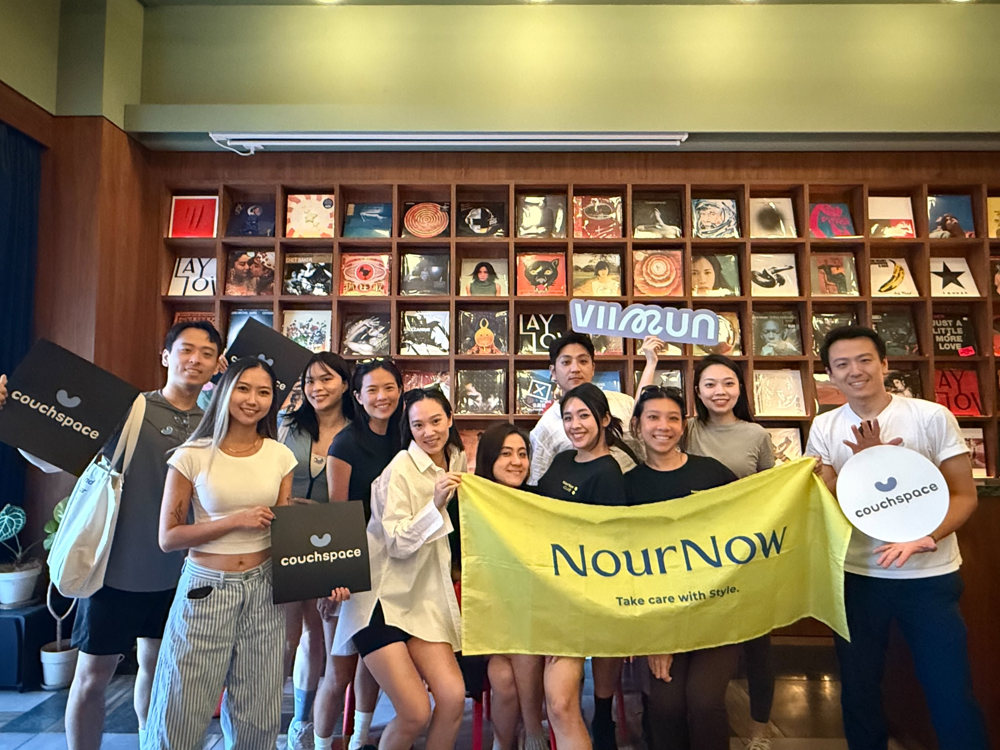
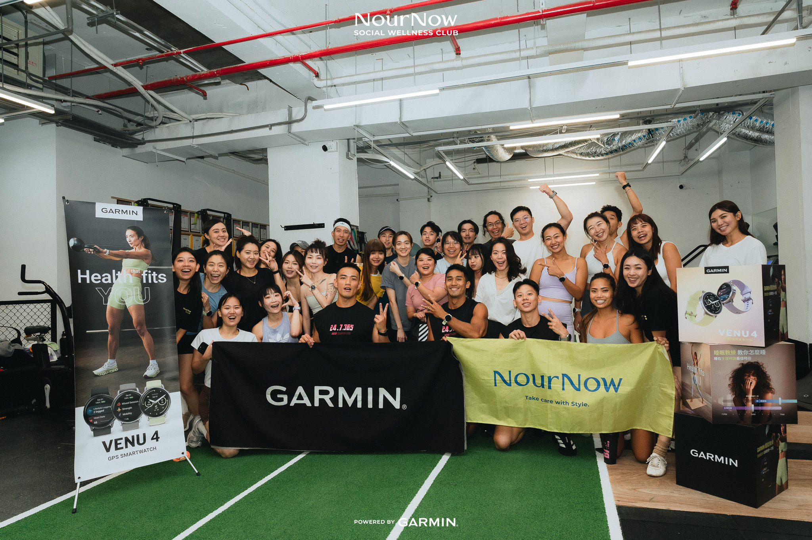
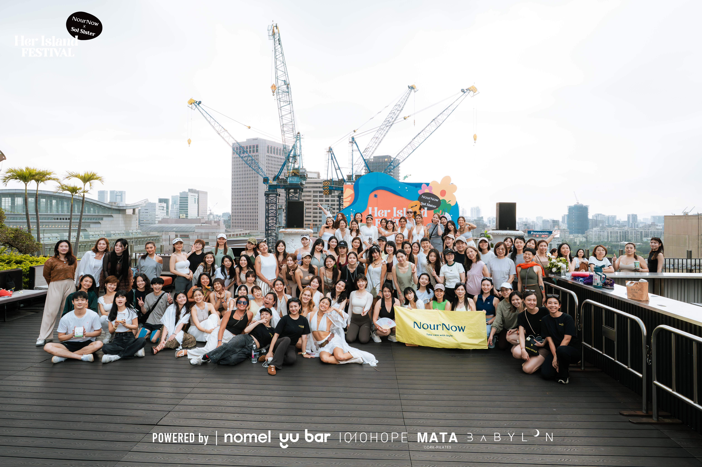
2022/12–2025/05
共同創辦人 · COO · Sales HeadCo-Founder · COO · Sales Head
Wave Drink · Taiwan
合夥創立台灣首個草本放鬆機能飲品牌。從品牌定位、產品研發至行銷推廣、庫存物流系統一手建立。B2B 銷售成功拓展至全台含外島 100+ 餐廳及飯店，並與 lululemon、Kiehl's、La Mer、Volvo、SOGO、富邦藝術基金會、台灣設計研究院及學學文化創意基金會等品牌與機構達成行銷合作。透過通路拓展與品牌合作，創造超過新台幣 150 萬元年營收。Co-founded Taiwan's first herbal relaxation functional beverage brand. Built everything from scratch: brand identity, product R&D, marketing, inventory and logistics. Expanded B2B to 100+ restaurants and hotels across Taiwan. Partnered with lululemon, Kiehl's, La Mer, Volvo, SOGO, Fubon Art Foundation, Taiwan Design Research Institute, and Xue Xue. Generated annual revenue exceeding NT$1.5 million through channel expansion and brand collaborations.
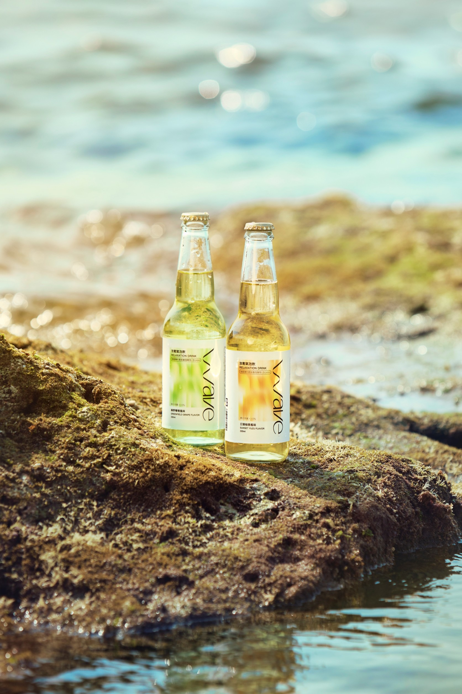
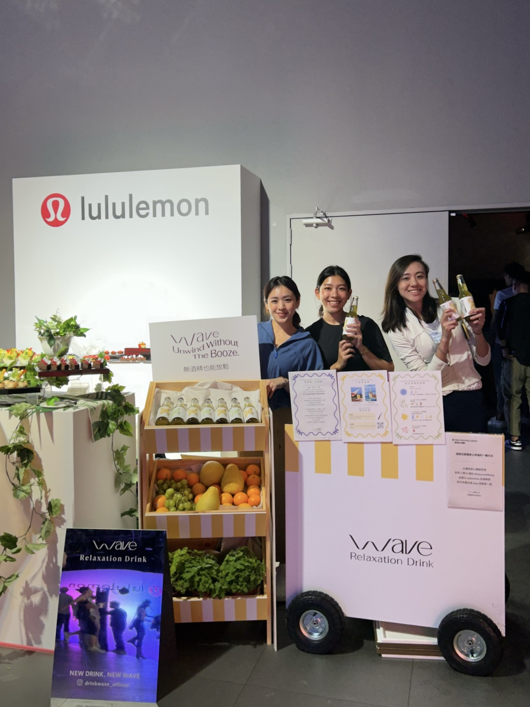
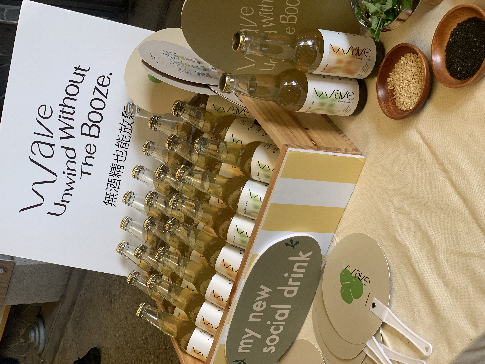
跨市場專業經歷Cross-Market Professional Experience
2019/12–2022/11
行銷主管Marketing Manager
NineUnited TAK · Asia-Pacific HQ
負責 Stellar Works 品牌於 7 個亞太市場的年度行銷策略規劃與落地執行，擔任總部與區域市場間的溝通橋樑；同時支援 HAY 團隊的區域執行工作。每月產出 8 篇內容支援跨市場傳播節奏；支援 50+ 產品系列年度落地上市；於 Design Shanghai、3 Days of Design 等展會服務 50+ VIP 經銷商客戶。Owned Stellar Works' annual marketing strategy and execution across 7 APAC markets, serving as the communication bridge between HQ and regional markets, while supporting the HAY team's regional execution. Delivered 8 pieces of content monthly to support cross-market communication rhythm. Supported the annual APAC rollout of 50+ product collections. Served 50+ VIP distributor clients at exhibitions including Design Shanghai and 3 Days of Design.
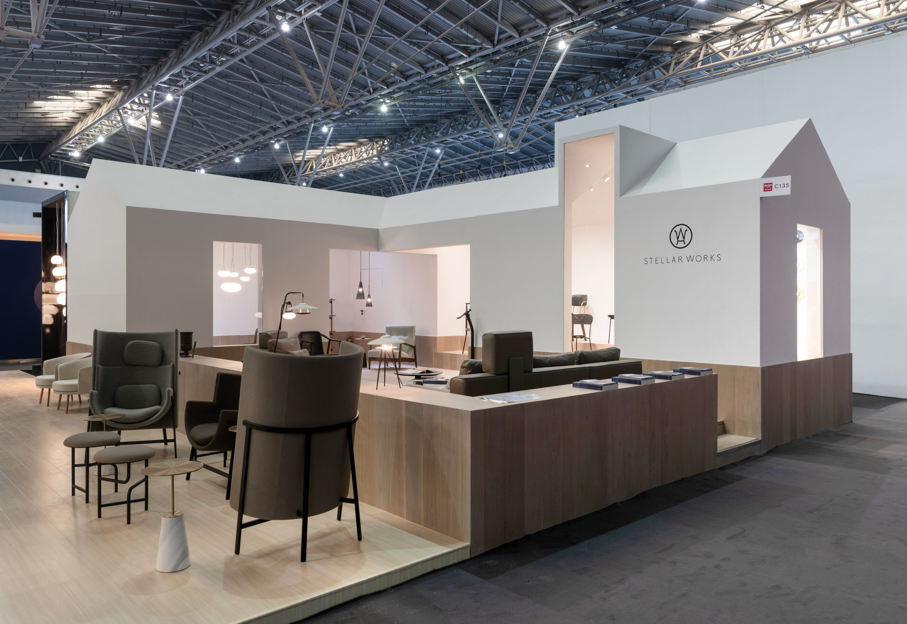
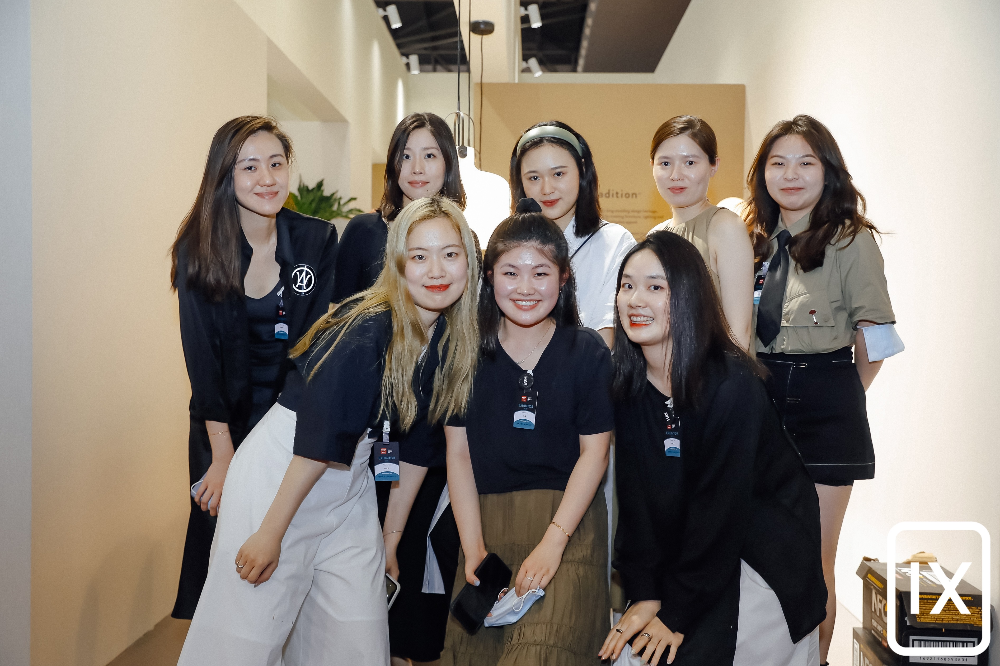
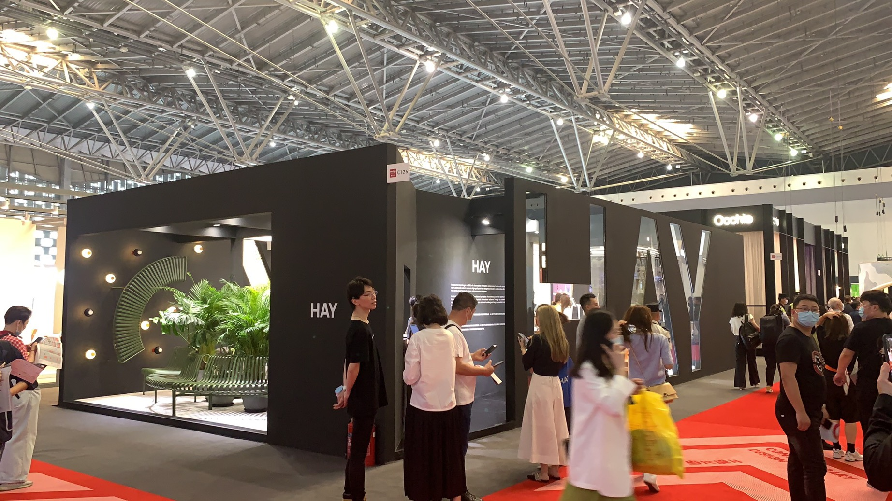
2018/09–2019/11
Shanghai
Shanghai
產品內容策劃Product Content Strategist
LaneHub 瓴里家具 · Shanghai
主導兩品牌（Blossom、Skyline）內容行銷，創下自營平台歷史最高瀏覽量。規劃執行大型線下活動，含 70+ 嘉賓沉浸式藝術展，吸引百萬級 KOL 與多家媒體報導。天貓旗艦店 200+ SKU 上架，年度 GMV 貢獻超過人民幣百萬元，位列全公司品牌銷售榜第 3 名。獨立孵化子品牌 Apathe，1 個月完成孵化方案並一次提報通過。Led content marketing for two brands (Blossom, Skyline), driving the platform's highest-ever view count. Planned and executed a 70+ guest immersive art exhibition, drawing million-follower KOLs and major media coverage. Managed the flagship Tmall store (200+ SKUs), contributing to annual GMV exceeding RMB 1 million and ranking 3rd company-wide in brand sales. Independently incubated sub-brand Apathe, from concept to positioning in one month, approved on first pitch.
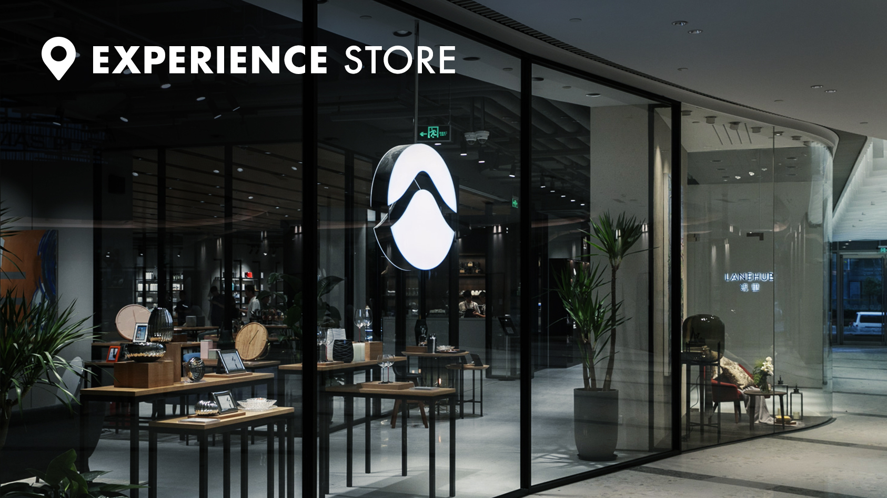
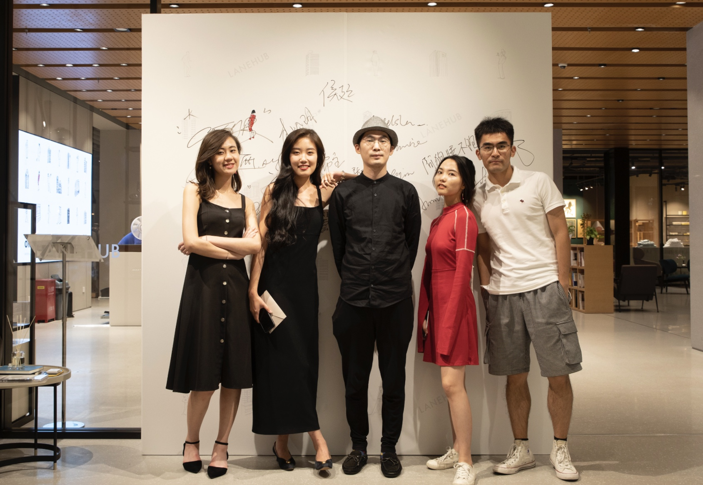

早期職涯基礎Early Career Foundation
2018/01–2018/06
資深客戶執行Senior Account Executive
Wunderman 偉門廣告
負責家樂福官網行銷維運，以及樂事新口味上市整合行銷 Campaign 的統籌執行，深化整合行銷與客戶管理能力。Managed Carrefour's official website marketing operations and led the integrated marketing campaign for Lay's new flavor launch in Taiwan.
2015/09–2017/09
產品企劃Product Planner
PChome 24h Shopping
負責家具線的數位行銷與銷售，涵蓋選品、推廣、庫存管理與廠商關係維護。建立電商營運完整認知。Managed digital marketing and sales for the furniture category — product curation, promotions, inventory management, and vendor relations. Built a foundational understanding of e-commerce operations.